Git 笔记记录(个人向)
1.Git简介
-
免费开源
-
分布式版本控制系统
-
使用名叫仓库
repository的数据库来记录文件的变化，仓库中每个文件都有一个完整的版本历史纪录，以方便查看谁在什么时间修改了哪些文件的什么内容。它还支持将文件恢复到之前的某个版本 -
它大大方便团队间对同一项目的合作，使得项目更改便捷清晰有效。
与分布式控制系统相较，还存在一类集中式版本控制系统，如
SVN、CVS等。
- 什么是分布式，每个人手里都有副本，凭借着一定的信用协议进行信息的交换那就是分布式。
Git就是每个人设备里都有完整的库的分布式。完成成员间信息的交换，互相同步一下就可以了。
- 世界上超过90%的开源项目都在使用Git进行版本控制，足可见它的强大
2.Git的使用方式
- 命令行(Shell或者是cmd)
- 图形化界面(GUI)
在Git官网就能找到诸如Git Cilents
- IDE插件或拓展(Git Bash)
3.Git的工作区域与文件状态
-
Git的区域分为工作区
working directory、暂存区staging area/index以及本地仓库local repository。 -
- 工作区
- 又叫
工作目录或者本地工作目录，也就是我们自己电脑的目录(文件夹)。
- 暂存区
- 又叫
索引即index，是一种临时存储区域，用于保存即将提交到Git仓库的修改内容。
- 本地仓库
- 就是通过
init或者clone生成的仓库，包含完整的项目历史和元数据，是Git存储代码和版本信息的主要位置。
-
三者之间的关系类似于a端、b端、c端或者是寄存器、Cache、主存之间的关系。其中工作区提交到暂存区通过
git add命令，暂存区提交到本地仓库通过git commit命令，两者的结合被称为提交。 -
在Git中，文件存在四种形式：未跟踪
Untrack、未修改Unmodified、已修改Modified和已暂存Staged。- 未跟踪
新创建的未被Git管理起来的文件
- 未修改
已经被Git管理起来的但还没被修改过的文件
- 已修改
被Git管理起来且已被修改的文件
- 已暂存
已经提交到暂存区
index的文件
具体说明如下图：

- 未跟踪
4.常用的Git命令
-
git config --global user.name "用户名"
* 初始化的时候设置用户名 -
git config --global user.mail 邮箱地址
* 初始化的时候设置邮箱地址-
不写或者写作
--local是本地配置的意思，只对本地仓库有用；--global是全局配置，对所有仓库都生效；--system是系统配置，对所有用户都生效。 -
若用户名中没有空格，不用双引号也是可以的
-
-
git config --global credential.helper store
*保存用户名和密码，这样就不用每次都输入了 -
git config --global --list
*查看git的配置信息 -
创建仓库
创建仓库有两种办法，第一种是初始化一个空白库，第二种是从他处克隆一个现成的仓库。
-
init
首先创建一个文件夹(目录)，后边创建的库在该目录下运行。创建可以用命令行语句mkdir 目录名，之后用cd 目录名打开以方便在目录底下进行。
随后使用git init创建库，默认的初始库名字叫main即主干(类似于树。即表示当前分支的名称，分支是当前演化的位置)。
初始化库后，会在当前目录生成.git文件，但直接通过ls命令则无法查看，需要使用加参数ls -a来查看全部文件(包括隐藏文件)。
Warning!.git文件存放了Git仓库内的所有数据。可以用cd .git和ls -altr来组合查看。- 通常不要去破坏
.git文件，因为它是仓库关键的配置文件，破坏它们会破坏Git仓库。而如果把.git文件删掉(\rm -rf .git)则整个仓库都会被删除。
我们可以直接在文件夹里创建我们想要的仓库，用
git init 仓库名的语法即可。这同样会在新建成的库内生成.git文件,并且分支判断会回到main分支(即主干)。 -
clone
clone是一种用于克隆(复制)他人或者远程Git仓库到本地的命令。它将仓库拷贝到本地，使开发者能够查看后修改该项目，并同步了仓库的所有代码和历史记录，也在本地创建了一个一模一样的副本。
它的格式是git clone [url],url是远程仓库的链接地址。这会在本地创建一个同名的一模一样文件夹。文件夹内是复制的库，包含全部的分支和历史记录。你可以使用其他的Git命令(如git checkout、git pull)对本地仓库进行操作。cd ..可以返回上一级文件夹或者退出库ls -ltr或者ls -str可以查看文件夹内可见文件，ls -atr可以查看文件夹内所有文件。
-
-
git status
* 查看当前所在的分支和分支内的文件情况。若写作git status -s表示查看状态这个命令的省略模式（它的返回会有??，第一列表示暂存区的状态，第二列表示工作区的状态）。 -
在当前库的文件夹下，
echo"文字内容"+文件名.文件格式可以用于创建一个文本文件，之后可以用ls打开并用cat 文件名.文件格式的方式查看文件内容 -
ls可以直接查看工作区存在的文件，git ls-files指令查看暂存区存在的文件；cat命令可以查看文件的具体内容
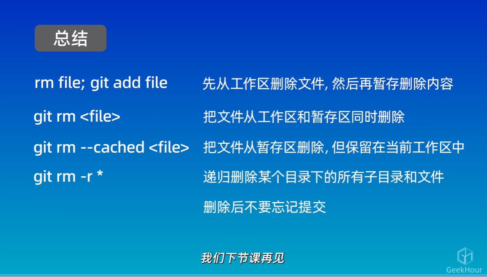 -
暂存与删除
-
git add
使文件添加到暂存区(被跟踪) -
git add .
将所有文件都添加到暂存区 -
git reset
使文件退出暂存进入工作区 -
git rm
删除工作区文件并将这次删除放入暂存区 -
git rm -f
删除工作区和暂存区文件并将这次删除存入暂存区(防止报错) -
git rm --cached
删除暂存区文件，保留工作区文件并将这次删除写入暂存区 -
rm+文件名
删除工作区的文件 -
git commit -m
提交暂存区的文件到仓库中，是文件真正保存起来若没有
-m这个默认标志,则会进入一个交互界面(通常是vim)手动设置信息存入,非常麻烦
vim是一种非常强大的文本编辑器.用方向键来使光标移动,按i进入编辑模式,可以在指定的地方输入编辑信息,按Esc回到命令模式,输入:wq保存退出就完成了 -
git commit -am 文件名
同时完成添加至暂存区和提交至仓库两个操作 -
git diff
用于查看文件在工作区、暂存区以及版本库之间的差异
它的输出分为5个部分：
变更文件名、被哈希算法转换为40位的哈希值的文件内容(可能只显示前几位，最后的几位数字代表文件的权限)、修改的内容(红色原来绿色现在)。若没有内容代表工作区和暂存区的内容一致。git diff HEAD可以比较版本库和工作区之间的差异，HEAD指向分支的最新提交结点，可以拿不同次提交的哈希ID来和HEAD比较。Git还允许用HEAD~n或者HEAD^n来表示当前的上个结点的ID。
git diff --cached可以查看暂存区和版本库之间的差异 -
vi 文件名
用于打开vim界面修改文件信息，具体操作同上. -
git reset+
--soft:使分支回退到之前的一个版本，但是保留工作区和暂存区的所有修改内容+
--hard:使分支回退到之前的一个版本且放弃工作区和暂存区的所有修改内容，可尾随HARD^来特指上一个版本+
--mixed:介于前两者之间，回退到之前的某个版本但是只保留工作区的修改内容(默认参数)

-
git log(--online\local)：查看提交历史 -
echo "文本信息" > 文件名
可以临时性创建一个文件或者对文件追加内容. -
ls -al: 查看库文件夹内的全部文件，包括隐藏的。
5. ".gitignore"
- 用于使文件夹中的有些文件有选择地不上传到库里而暂存到
.gitignore中(也就是忽略)。.gitignore需要自己创建 - 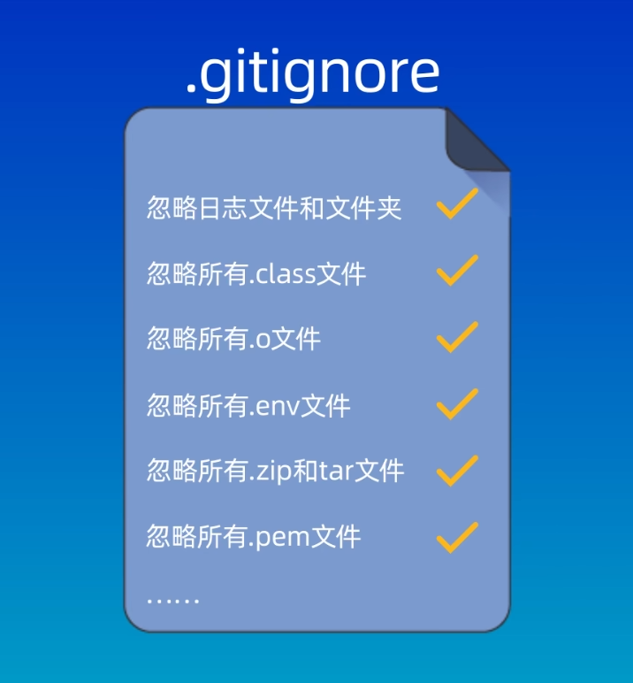
- 应该忽略哪些文件？
- 系统或者软件自动生成的文件
- 编译产生的中间文件和结果文件
如Java生成的
.class文件和C语言生成的.o文件) - 运行时生成的日志文件、缓存文件、临时文件
- 涉及身份、密码、口令、密钥等敏感信息文件.
.gitignore会接收我们提交给Git的模式，模式体现的这些文件不会被提交到版本库中去。.gitignore相当于一个临时的回收站- 【Bug】:
.gitignore无法对已经被添加到库中文件发挥作用，只对工作区和暂存区的内容有效。 - 若库所在的文件夹中有空文件夹，那么该文件夹将不会被纳入
git的版本控制中。当然可以用mkdir 文件夹名来创建新的文件夹 - 若要只在库内删除应屏蔽的文件，可以用
git rm --cached 文件名。用git rm 文件名会把库、本地的文件全删除. - 具体步骤：
- 若要在库\分支中屏蔽相关文件，可以将文件名添加到
.gitignore中，这会使库中对应文件名的文件被忽略。 - 若要一次性屏蔽所有的相关文件(如哪类文件.xxx)，可以使用通配符来匹配所有以后缀结尾的文件,如
*.log等。 - 若要一次性屏蔽一个文件夹，可以用
文件夹名\的格式
- 若要在库\分支中屏蔽相关文件，可以将文件名添加到
.gitignore文件的匹配规则- 它是从上到下逐行匹配，每一行代表一个忽略模式(rule pattern)
- 常用的一些格式
- 空格或者
#开头的行会被Git忽略。一般空格用于可读性的分割，#用于注释信息 - 使用标准的
glob模式(shell所使用的简化了的正则表达式)进行匹配，例如：*代表通配任意个字符?代表通配单个字符[···]表示匹配列表中含有的单个字符，如:[abc]代表a/b/c[]中间可以用短中线-连接，代表两端所框定的全部成员都选中。如[a-z]表示全部小写字母**代表匹配任意的中间目录！表示取反，要忽略指定模式以外的文件或者目录
- 空格或者
- 详细规则见于
Git官网的相关网址 - 例如：
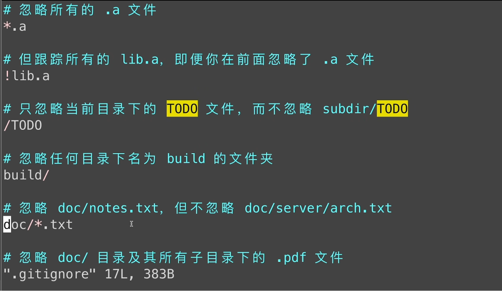
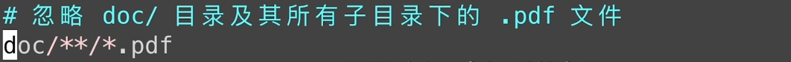
6.如何使用Github来管理我们的代码
- 将本地仓库和Github关联起来
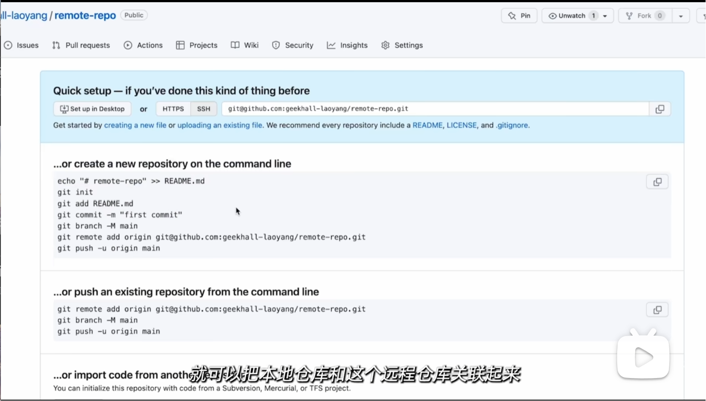 - 远程仓库地址的两种方式：
HTTPS和SSH。-
HTTPS
在本地代码
push到远程仓库的时候需要验证用户名和密码(官方已放弃)
地址格式：https://github.com/····/xxx.git -
SSH
不用验证用户名和密码，但要在Github上添加对应地址的
SSH公钥的配置
使用SSH方式必须要配置SSH密钥。给Github配置SSH密钥：
- 打开到库文件夹的根目录
cd .shhssh-keygen -t 协议方式 -b 指定生成大小%例如rsa协议方式和4096大小- 进入下一步设置密钥名称。若是第一次访问，则可以用回车跳过，系统将自动在
.shh目录下生成id_rsa的密钥文件；
若已经生成过shh密钥，千万不要回车，因为它会覆盖掉原来的shh密钥信息且不可逆。对此我们应该输入设置一个新的文件名和密码。此时库中会生成文件名和文件名.pub两个文件。其中文件名文件是生成的私钥，文件名.pub文件是生成的公钥。 - 复制
文件名.pub中的公钥文件，到个人账号的Settings中的SSH and GPG keys的New SSH Keys的选项中添加我们创建的文件名和公钥文件并保存。 - 若是第一次访问或者没有更改
SHH密钥文件名，则不用操作；
若更改了文件名，我们需要创建一个config文件，语法为tail -5 config
.在config文件内输入以下5行信息：
# github
Host github.com
HostName github.com
PreferredAuthentications publickey
TdentityFile ~/.ssh/文件名 - 这样我们就使得本地库和Github之间建立了联系。
地址格式：
git@github.com:····/·xxx.git
-
- 推送与拉取
git push:推送到远程仓库git pull <远程仓库名> <远程分支名>:<本地分支名>: 抓取到本地仓库来
pull之后会有一个分支文件合并的操作。若文件不一致，则会发生冲突，此时需要我们手动解决冲突git clone 仓库地址：从远程仓库复制一个完整的库到本地git fetch: 从远程仓库获取修改，但不会自动合并到本地仓库中，需要手动处理
- 将本地仓库与Github上创建的远程仓库关联起来
git remote add <shortname> <url>: 将远程仓库以一个`别名关联到本地git remote -v: 查看当前仓库所对应的远程仓库的别名和地址git branch -M <name>: 指定当前分支名称git push -u <shortname> <name>: 将当前仓库分支与远程仓库分支关联起来
7.其他的git托管平台
1. Gitee
- 码云，属于国内平台
- 使用起来基本和Github一样
2. Gitlab
- 又叫
极狐 - 私有化部署，可以自己搭建服务器
- 使用起来同样也是：
- 在远程创建仓库
- 将仓库克隆到本地
- 对应查看远程仓库的地址并且建立关联
- 修改本地仓库
- 将本体仓库推送至远程仓库
8.GUI(图形化工具)
- Github Desktop
一般情况下基本够用,但是只能用在
Github中 - Sourcetree(推荐)
- GitKraken(少功能)
- Gitlen
支持在
vscode中使用图形化工具 - 以下以如何在
vscode中使用Git举例：- 在
vscode中打开文件夹，除了可以用软件打开，还可以用命令行的code 地址的格式打开 - 在源码管理器中：
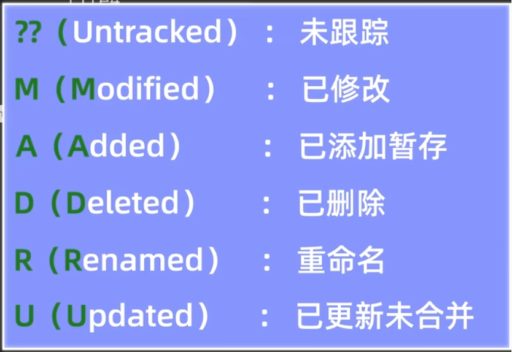
- 在
Git支持用alias <别名/助记词>="取代内容"的语句来简略文本命令，类似于C中的defined指代语句。如： alias graph="git log --online --graph --decorate --all"
9.分支(Branch)
- 类似于树的分叉，非常适合多个开发人员同时开发同一个项目。每个开发人员可以在主干之外开辟自己的分支独立进行开发，最后再合并进入主干即可
- 也可以在一个分支上进行新功能的开发，或者建立一个问题修复的分支来处理一些bug和缺陷。这样可以让主线代码仓库处在一个随时可用的比较稳定的状态中，不会影响到其他功能的开发和测试，保证项目的正常运行和高效协作。
- 常用的分支命令
git branch:查看当前仓库内的所有分支情况(或者所在哪个分支上)git branch <branchname>:创建一个新的分支git checkout <branchname>:切换收到想切换的对应分支上除此以外，
git checkout还可以用于恢复文件或者让目录回到之前的某一个状态。其文本命令也是同切换，而系统在接收到相关文本命令时会默认执行切换分支操作。故当分支名和文件名相同时，会造成严重的歧义。故不推荐再用checkout关键词来实施分支切换git switch <branchname>:更加明确的分支切换命令，基本功能与上者一致。(推荐使用)git merge <将要被合并的分支名>：将对应的分支合并到当前所在的分支中来。每一次合并git会自动帮我们生成一次提交，我们需要补充提交的说明信息(还是使用vim输入，用wq保存)当一个分支合并到另一个分支中后，只是分支的内容完成了合并，但分支自身还是存在的(只是空了)。若要完全消除分支的存在，可以使用
git branch -d <branchname>的命令来彻底删除这个分支git log --graph --online --decorate --all:可以在命令行中查看仓库对应的分支图git branch -D <branchname>: 若分支没完成合并就想要删除分支，相关关键字需保留大写来强制删除分支git merge --abort: 终止之前的合并操作，当然已经删了的话没法挽回- *变基(
Rebase)- 在
Git中，每一条分支都有一个指针指向当前分支的最新提交记录。 - 如果是
merge操作,每一次合并只是像溪流汇集到主干中一样，只有合并后的信息共用，但合并前的内容除非删除，不然仍是保留的。
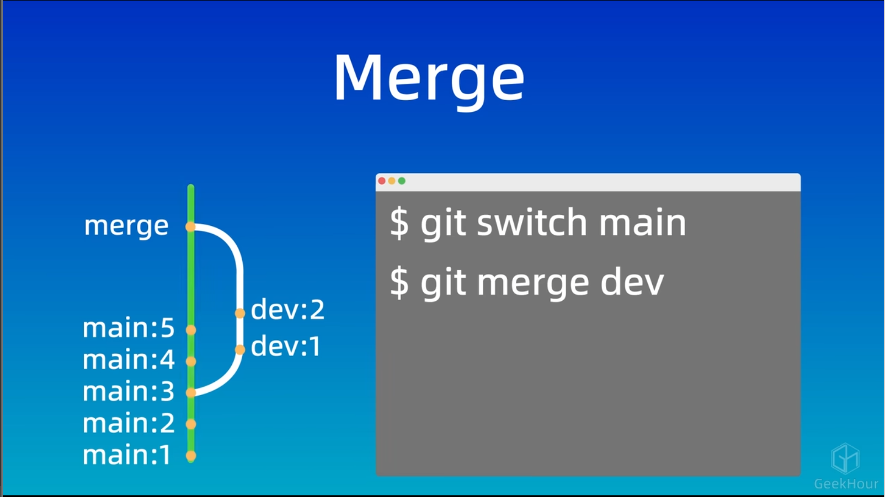
而rebase换基命令则是将分支真正融合，所有数据合成一脉，从分叉点嫁接移植在一起。
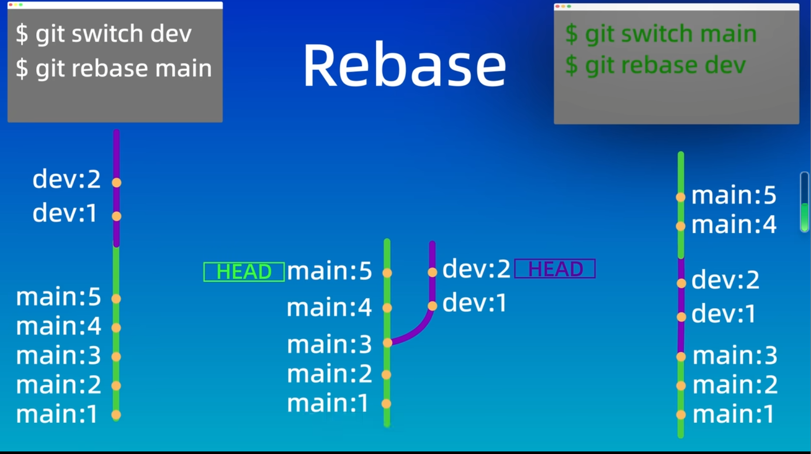 rebase操作的顺序会影响结果，例如A支合并到B支，结果是; 而B支合并到A支，结果是
- 在
- 关于
merge和rebase的分析：Merge Rebase 优点 不会破坏原分支的提交记录，方便回溯和查看 不会新增额外的提交记录，形成线性历史，比较直观和干净 缺点 会产生额外的节点，分支图比较复杂 会改变提交历史，改变了当前分支 branch out的节点，应避免在共享分支使用
- 分支的冲突和解决
- 当多个分支同时修改同一个文件的同一段信息并合并分支时，修改会产生冲突
conflict，仓库repository会发生矛盾。git commit -a -m <filename>或者git commit -am <filename>支持一次性完成暂存和提交两步的操作，但是要求是这个文件之前出现在仓库中过。如果是全新创建的文件，则不能使用-a说明符，需要一步一步完成暂存和提交操作 - 发生冲突后，可以使用
git status来查看冲突文件的列表，或使用git diff命令来查看冲突的具体内容(用<<<<<来代表合并到的分支的内容；用>>>>>来代表我们要合并的分支的内容),接着需要我们自己手动判断和解决冲突内容，再执行合并。
- 当多个分支同时修改同一个文件的同一段信息并合并分支时，修改会产生冲突
10.工作流模型*
- 对于分支(
branch)使用来说比较好的模型和流程，可以使我们的工作更高效和更有条理。 - 以下介绍一些模型：
1.GitFlow
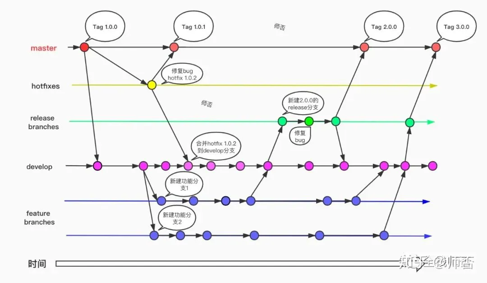
这是一种最为常用的工作流模型。它的常见分支有5个:
- 生成分支
master\main
master分支是仓库的主分支，这个分支包含最近发布到生产环境的代码，最近发布的release， 这个分支只能从其他分支合并，不能在这个分支直接修改。每次合并分支都建议生成一个新的版本号以方便跟踪和回溯，可以用git tag命令来对main分支标记版本号。
版本号的使用一般也是有规定的，例如一种常用的：
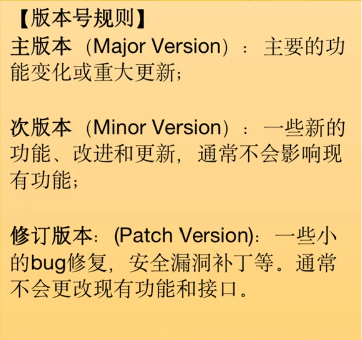 - 补丁分支
hotfix
当我们在生产环境发现新的Bug时候，我们需要基于master分支创建一个hotfix分支，然后在hotfix分支上修复bug，完成hotfix后，我们要把hotfix分支合并回master和develop分支 - 发布分支
release
当你需要发布一个新功能的时候，要基于develop分支创建一个release分支，在release分支测试并修复bug，完成release后，把release合并到master和develop分支 - 开发分支
develop
这个分支是我们的主开发分支，包含所有要发布到下一个release的代码，这个主要合并于其他分支，比如feature分支 - 功能分支
feature
feature分支主要是用来开发一个新的功能，一旦开发完成，我们合并回develop分支进入下一个release
以下介绍GitFlow的具体步骤：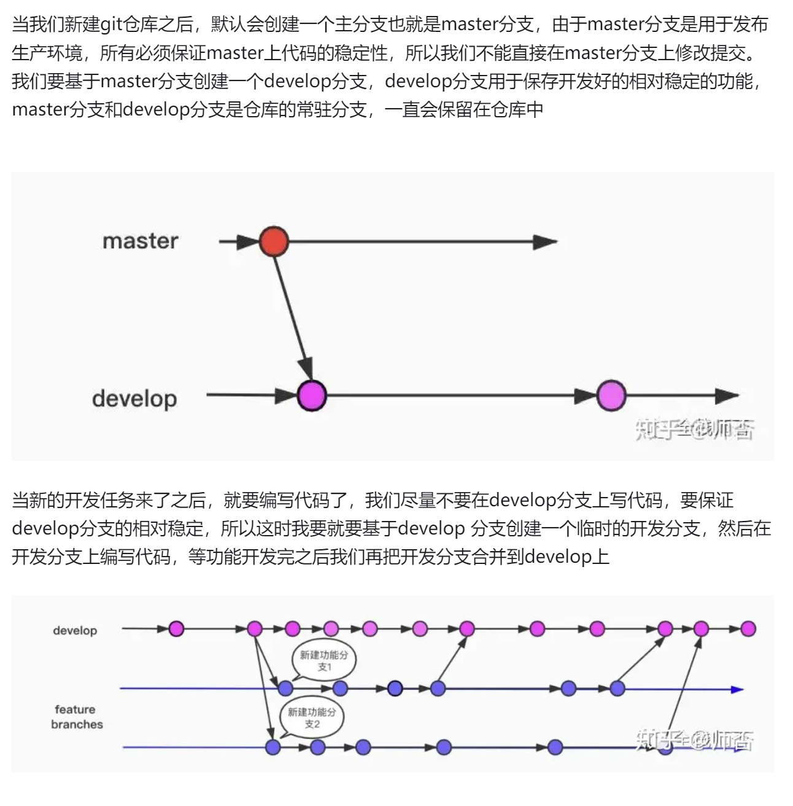
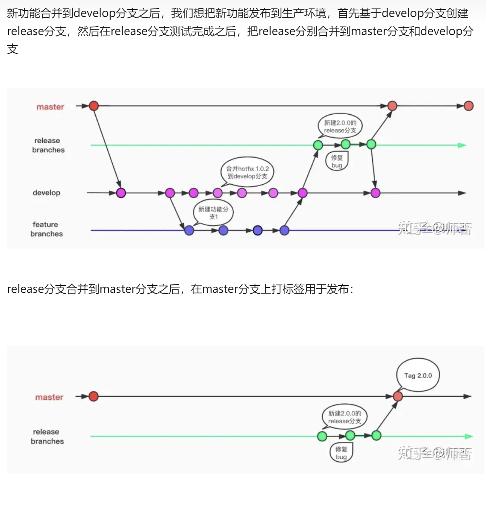
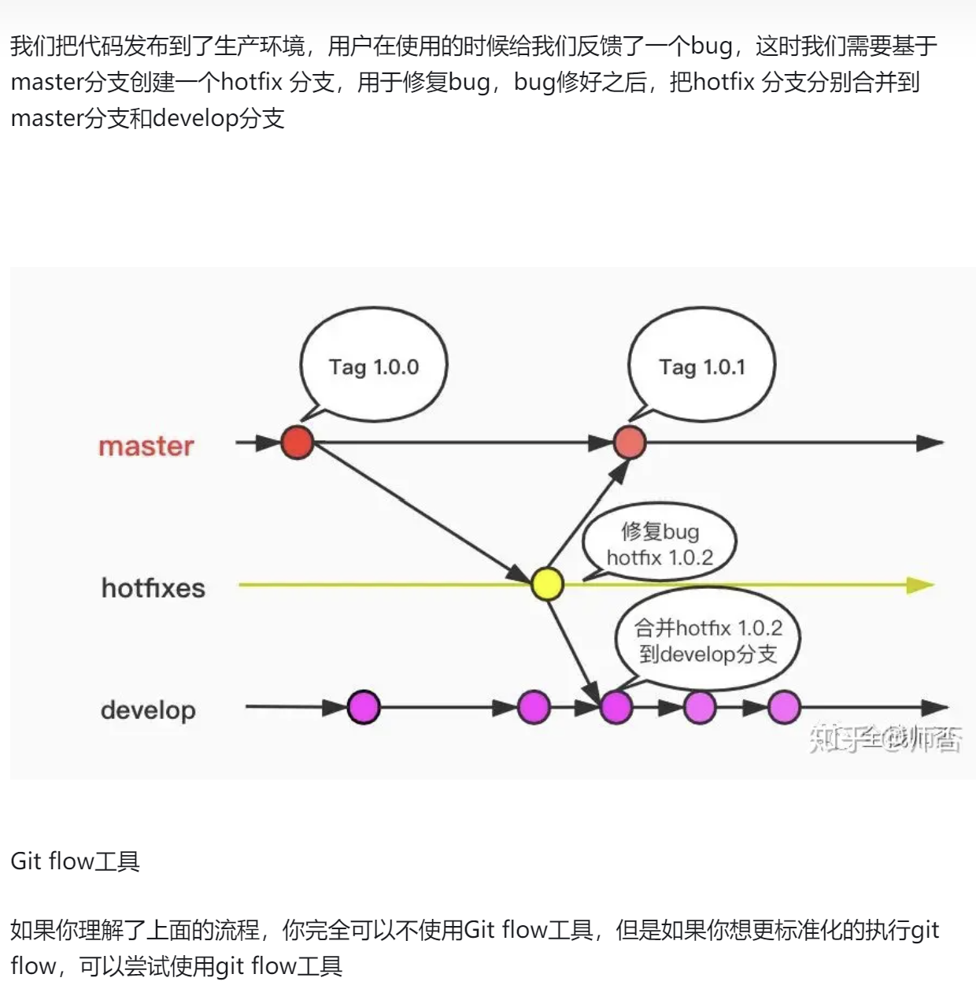
对于Windows来说，我们可以用：
$ wget -q -O - --no-check-certificate https://github.com/nvie/gitflow/raw/develop/contrib/gitflow-installer.sh | bash
来下载安装。
- 具体使用如下：
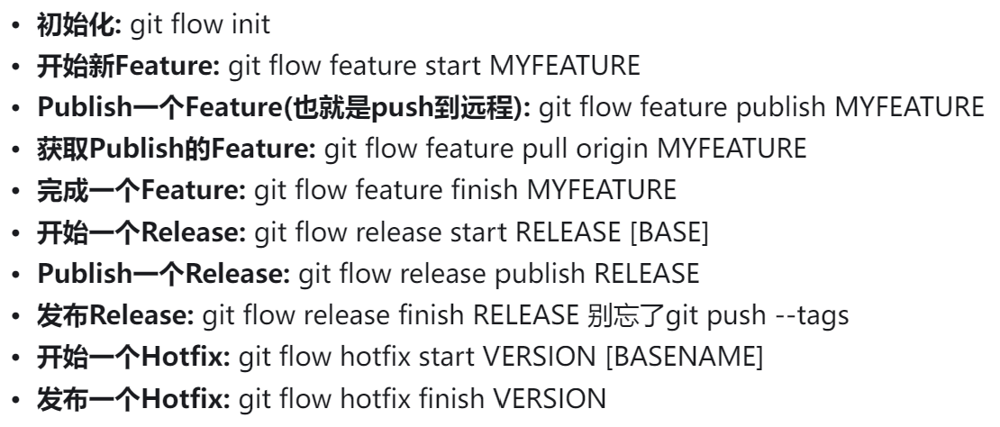 - 分支按照使用寿命又可以分为两种：
- 主要分支，包含
main分支和develop分支。它们是项目的核心分支。 - 辅助分支，即剩下的三类分支。他们在完成分支的相应任务后就可以删除了
- 主要分支，包含
2. Github Flow
- 相较于
GitFlow模型，它更加简单明了。 GitFlow适用于技术水平适中，有一定开发经验和流程的团队；Github Flow则更适用于技术水平比较高的团队或者开源项目- 详细流程如下图：
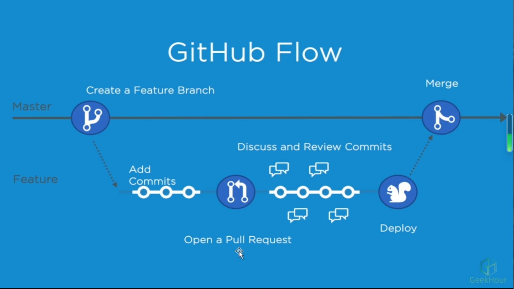- 只有一个长期存在的主分支和其余的开发分支。主分支上的代码是可以直接部署(
dispaly)到生产环境中的。为了避免冲突，一般会对主分支设置分支保护，禁止成员随意往主分支上进行提交。 - 开发人员一般直接从主分支上分离出自己的分支进行开发和测试，在本地分支上提交代码……等到开发完成之后，可以发起一个
Pull Request(简称PR)的拉请求(拉到主干上)或者合并请求。团队成员们会对请求的代码进行评审Review。如果没有问题就可以将这个PR发布和合并到主分支中在
GitLab码云里也有类似的操作，但是这个操作叫Merge Request\MR
- 只有一个长期存在的主分支和其余的开发分支。主分支上的代码是可以直接部署(
3.分支规范
- 分支命名
- 版本发布应该根据版本号命名
- 功能性分支应该根据其功能和任务命名
- 修补补丁个错误应该根据其问题编号命名
- 分支管理
- 定期合并已经验证成功或者失去意义的分支，及时删除已经合并的分支
- 保持合适的分支数量
- 确保及时将功能性分支合并进主分支
- 要为分支设置合适的管理权限